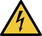

Operating Documentation
Direction 5193574-800, Rev# 22
Module Version 4.0, Version Date 6/2/10
Operating Documentation |
 |
| |||
| ELECTROCUTION HAZARD | ||||
| HIGH VOLTAGE PRESENT | ||||
| USE PROPER LOCKOUT / TAGOUT PROCEDURES BEFORE REPLACING THE COMPONENTS. |
| ||||
| POTENTIAL FOR INJURY TO SERVICE PERSONNEL | ||||
| THE VeRB COMPUTER CHASSIS CAN WEIGH IN EXCESS OF 40 POUNDS. | ||||
| DEPENDING ON YOUR HEIGHT AND ACCESS TO EQUIPMENT REMOVAL/INSTALLATION, LIFTING ASSISTANCE MAY BE REQUIRED. USE YOUR JUDGMENT TO DETERMINE IF LIFT ASSIST OR A SECOND PERSON MAY BE REQUIRED TO ASSIST IN REMOVAL AND INSTALLATION. |
| ||||
TO PREVENT DAMAGE TO COMPONENTS WITHIN THE HSDA, OBSERVE THE
FOLLOWING ESD PRECAUTIONS:
FOR FURTHER INFORMATION REGARDING ESD PROTECTION, REFER TO THE SAFETY CHAPTER IN THIS PUBLICATION | ||||
| ||||
| IN ORDER TO MEET EMC REQUIREMENTS, THE CHASSIS MODULES MUST BE PROPERLY INSTALLED AFTER SERVICING. CHECK THAT THE MODULES ARE MOUNTED FIRMLY IN PLACE AND LOCKED DOWN WHERE APPLICABLE. | ||||
| ||||
| FOLLOW ALL REQUIRED SAFETY AND PPE PROCEDURES CUSTOMARY FOR YOUR ORGANIZATION WHEN WORKING ON THIS PRODUCT. | ||||
| Condition | Reference | Effectivity |
|---|---|---|
Access to both the front and rear of the Operator Console is required. Move the console away from walls and remove obstacles in room. | - | - |
Only trained service personnel should service the GE CT Scanner. | - | - |
Select one of the following methods to power off the Operator Console:
Power OFF the Operator Console at the front panel switch. (See Illustration 2.)
Perform prescribed Lockout/Tagout procedure. For added protection, disconnect the Twist-N-Lock Main Power Cable from rear of console.
Remove the front and rear Operator Console Covers per prescribed cover removal procedure.
Remove the cable connections at the rear of the VeRB Computer chassis.
Remove the power cord at the rear of the VeRB Computer chassis.
Remove the four (4) 5mm socket cap mounting screws and washers from the front of the VeRB Computer chassis, holding the chassis to the Operator Console rack.
Slide the VeRB Computer chassis forward (out the front of console) and set aside. For lifting details, refer to the Equipment Service - Console procedure located in the Safety folder of this service methods publication.
At the rear of the VeRB Computer Chassis, release the Chassis Cover Lock using a Phillips screwdriver. Back out lock screw at least two (2) full turns.
Slide the Chassis Cover towards the front of the chassis and remove.
Remove the Expansion Card Hold-down Clamp from VeRB Computer Chassis.
Disconnect the two (2) Power Supply Connectors at the rear of the GPU Card.
Remove the two (2) Phillips Screws holding the GPU Card in the VeRB Computer chassis and carefully remove the card from the Systemboard.
Carefully install the replacement GPU Card in the same location (slot) in the VeRB Computer. Make sure all cables are clear of the GPU Card and the card seats firmly in the Systemboard.
Reinstall the two (2) Phillips Screws to secure the GPU Card to the chassis.
Reconnect the two (2) Power Supply Connectors to the rear of the GPU Card.
Reinstall the Expansion Card Hold-down Clamp in the VeRB Computer Chassis.
Reinstall the VeRB Computer Chassis Cover and lock the cover in place.
Slide the replacement VeRB Computer into the Operator Console from the front.
Replace the four (4) 5mm socket cap mounting screws and washers to secure the VeRB Computer chassis to the Operator Console rack. Torque to 4.6 N-m.
Mount the power cord to the rear of the VeRB Computer chassis and verify that its power supply switch is turned to the ON position.
Replace the rear cable connection(s).
Reconnect the Twist-N-Lock Main Power Cable from rear of console and remove Lockout Tagout protection applied earlier.
Power ON the Operator Console at the console’s front panel switch.
Visually verify the VeRB Computer front panel Power LED is illuminated. If not, press the VeRB’s front panel power switch to apply power to the VeRB Computer.
Verify that the VeRB Computer has powered up and is not displaying or sounding any POST Errors.
No other verifications steps required.
Refer to System Scanning Test to confirm proper operation.
Reinstall Console Front and Rear Covers.